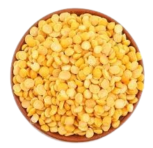

Pulses
Chana Dal (Split Chickpeas):

Daal Chana is rich in protein, dietary fiber, and essential minerals like iron, magnesium, and zinc.
It is an excellent source of folate and vitamin B6, which support heart and brain health. With a
nutty flavor and firm texture, it is ideal for curries, soups, and snacks like fritters. Its high
fiber content aids digestion and helps regulate blood sugar levels.
Moong Daal (Split Green Gram):

Moong Daal is light, easily digestible, and a powerhouse of plant-based protein. It is rich in
vitamins A, B, and C, along with potassium, calcium, and iron. This low-fat pulse is perfect for
weight management and promoting heart health. It is commonly used in soups, light curries, and
khichdi due to its mild flavor and quick cooking time.
Daal Masoor (Red Lentils):

Daal Masoor is a quick-cooking lentil packed with protein, iron, and potassium. It is a good source
of dietary fiber, folate, and vitamin B1, which support energy production and heart health. Its
slightly sweet and nutty flavor makes it ideal for curries and stews. Regular consumption helps
improve digestion, maintain blood pressure, and support bone health.
Daal Maash (Split Black Gram):

Daal Maash is high in protein, dietary fiber, and essential minerals like magnesium and phosphorus.
It also contains vitamin B3, which aids in energy metabolism and skin health. With its rich, earthy
flavor and creamy texture, it is a popular choice for traditional dishes like Maash daal curry. Its
fiber content promotes gut health and helps lower cholesterol levels.
Toor Daal (Pigeon Pea):

Toor Daal is an excellent source of protein, folate, and dietary fiber, supporting muscle repair and
heart health. It contains iron, calcium, and potassium, essential for bone strength and regulating
blood pressure. Known for its slightly tangy flavor, it is a popular choice for traditional curries
and soups. The antioxidants in Toor Daal help reduce inflammation and boost immunity.
Kala Masoor (Whole Red Lentils):
Kala Masoor is rich in protein, iron, and folate, making it ideal for energy production and
supporting red blood cell formation. It is also high in antioxidants and dietary fiber, aiding in
digestion and improving gut health. With its nutty flavor and hearty texture, it is used in stews,
salads, and pilafs. Its low glycemic index makes it suitable for diabetics.
Red Lobia (Red Kidney Beans):
Red Lobia is high in protein, fiber, and antioxidants, making it a great choice for heart health and
managing blood sugar levels. It is a good source of potassium, magnesium, and vitamin B1, which
support cardiovascular health and energy production. Its hearty texture and ability to absorb
flavors make it a favorite for curries and soups.